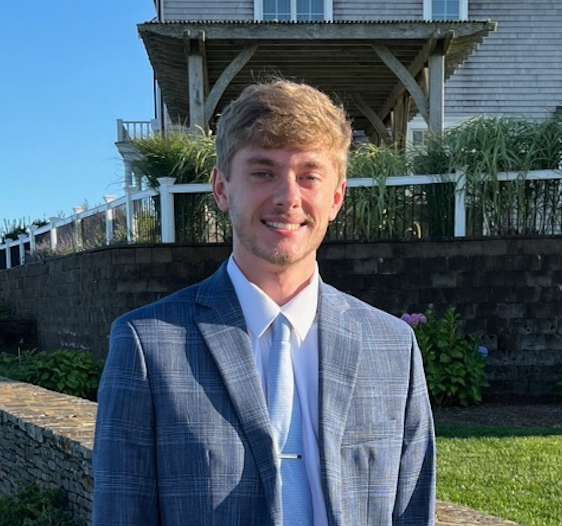

I'm a senior at UMD's Philip Merrill College of Journalism with strong experience in writing, reporting and production.
ContactFreelance Reporting | College Park, MD
October 2025 – Present
5wins
August 2026 – Present
Philip Merrill College of Journalism
B.A. in Journalism
Expected Graduation: December 2026
A.A. in Journalism and Communications
August 2022 – May 2024